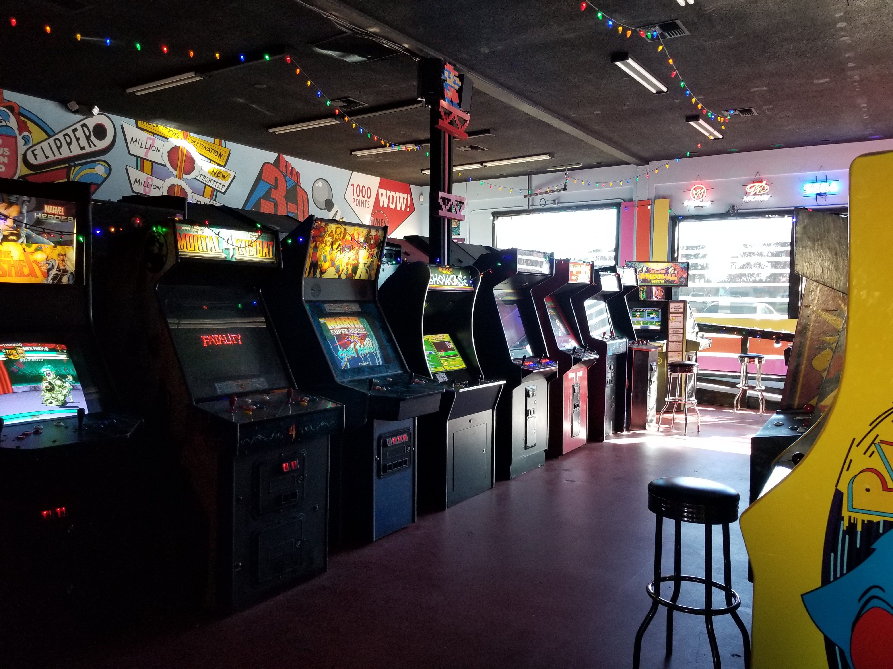
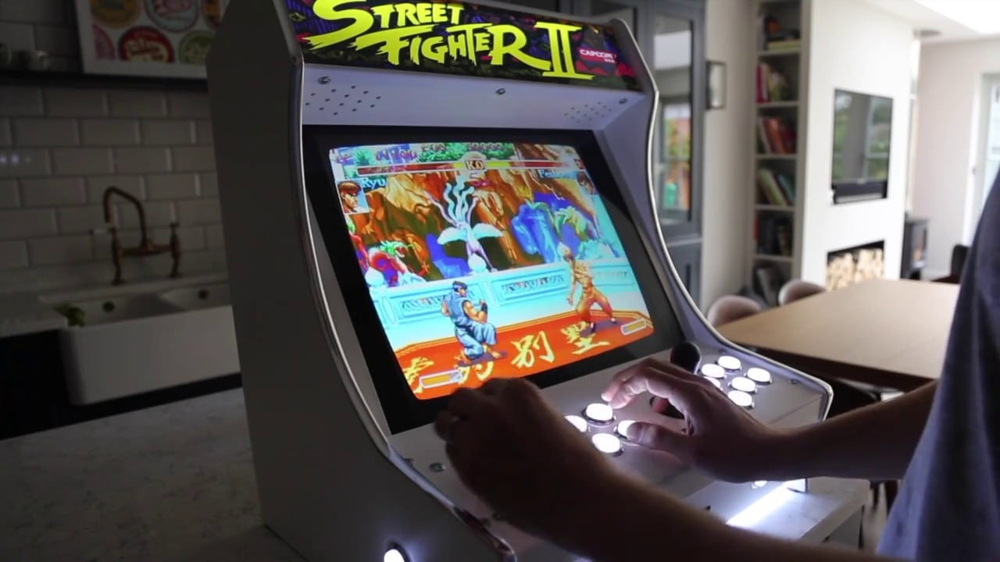

For those that were born after the year 2000, Arcades may not mean much to you, but to the oldies like me, this is where the best video games of today were born. At that time, you`ll see kids running towards arcades, asking their parents for a bunch of quarters to play with strangers and friends alike. Today, arcade gaming mostly consists of fighting and competitive games, claw games, or ticket games, so it is now a very different scene from when it started where different types of games can be seen like the old school Pacman, Galaga, Crazy Climbers, Donkey Kong, Punch Out, and a lot of other old games as well as some new ones back in the late 90`s like Metal Slug, Captain Commande, and Strider (Hiryu).
In our modern age, arcades are now mostly comprised of games that has a different method of controlling the game - not like the traditional controllers that is now a standard of the home console market. Many of the popular arcade games now are dance games that needs a dance pad, shooting games that need a light/plastic gun, or rhythm games that needs guitars or drums to play, although fighting games are still popular in arcades, the focus in arcades now is different from before whereas before, the content of the game was very important and the game had to be fun all around, but now, many of the known arcade games focus on competition with other players as a way to keep players coming back for more.
